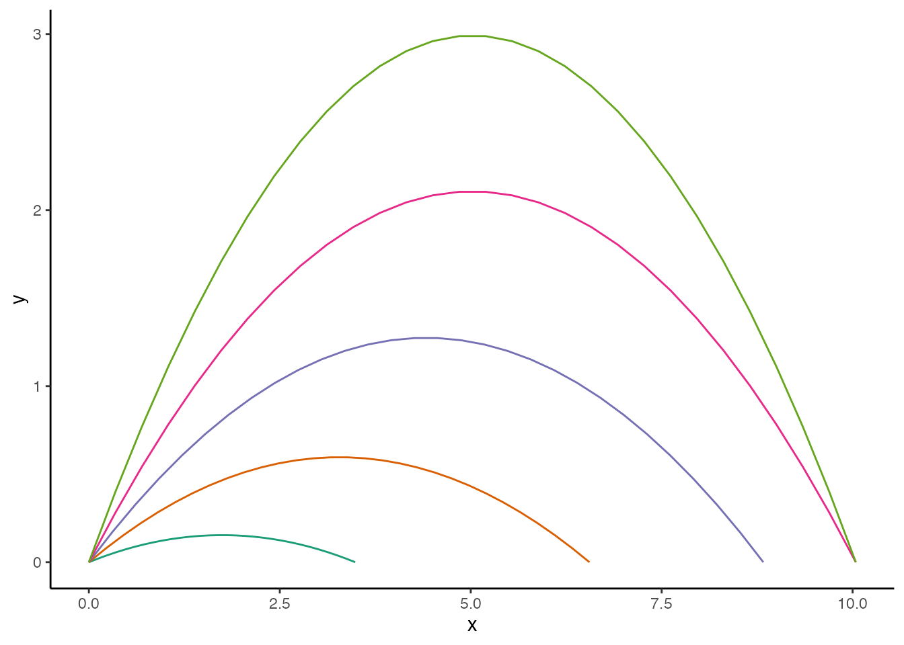

Overview
Projectile motion describes the motion of an object launched into the air whose trajectory after launch is influenced only by the force of gravity and for which air resistance is negligible. Projectile motion was first accurately described by Galileo Galilei in his book Two New Sciences, published in 1638. In what he dubbed compound motion, Galileo demonstrated that projectile motion can be broken down into independent horizontal and vertical components that can be analyzed separately to describe an object’s trajectory. He used this principle to prove that the trajectory of an object in projectile motion will always follow a curve in the shape of a parabola.
Galileo used an inclined plane to demonstrate his principle of compound motion. I’m going to use R.
Post Inspiration
I recently finished Outer Wilds, an open world adventure game set in a strange, constantly evolving solar system trapped in an endless time loop. It’s a great game and I really enjoyed solving the mysteries of the solar system. The reason I bring it up here is that, on top of being a great game, the physics realism of Outer Wilds is something that really stood out to me.
For instance, at the start of the game there’s a museum exhibit consisting of a low table and three gently rolling balls that appear to move around on their own.
Emphasis on gently. Wait for it…
But the balls are not actually moving on their own. Their motion is being affected by the moon’s gravity. As the placard beside them explains: “As it orbits our planet, the Attlerock’s gravity pulls on objects from different directions. In fact, it’s pulling on you right now!” This isn’t just flavour text—the game is actually simulating planetary gravity.
Outer Wilds uses its physics realism to great effect in other parts of the game (ever wondered what it’s like to stand on planet while it breaks apart into a black hole?), and experiencing it all got me curious: What kinds of physics simulations could I do in the two-dimensional space of a plot? After some research and reading I landed on projectile motion.
Prerequisites
library(tidyverse)
library(gganimate)
library(ggh4x)
library(formattable)
library(emojifont)
library(glue)I’ll be simulating data for my plot by turning the equations for projectile motion into R functions. You can download this data with the Data Source link in the appendix. The sources I used for the equations can also be found in the appendix.
Simulate
The equations for projectile motion use a common set of variables which are listed below. The equations assume that the force of air resistance is negligible
\begin{align*} V &\leftarrow \textrm{initial velocity}, \\ V_x &\leftarrow \textrm{horizontal velocity}, \\ V_y &\leftarrow \textrm{vertical velocity}, \\ \alpha &\leftarrow \textrm{launch angle}, \\ h &\leftarrow \textrm{initial height}, \\ t &\leftarrow \textrm{time of flight}, \\ d &\leftarrow \textrm{distance (range)}, \\ h_{\textrm{max}} &\leftarrow \textrm{maximum height}, \\ g &\leftarrow \textrm{gravity}. \end{align*}
Horizontal and vertical velocity
The horizontal velocity, V_x, and vertical velocity, V_y, of an object moving in projectile motion are given by the equations
\begin{align*} V_x &= V \times \cos(\alpha), \textrm{ and} \\ V_y &= V \times \sin(\alpha), \end{align*}
where V is the initial velocity and \alpha is the launch angle. Horizontal and vertical velocity can be computed in R with the following functions.
velocity_x <- function(velocity, angle) {
# Degrees need to be converted to radians in cos() since that is what the
# function uses
velocity * cos(angle * (pi/180))
}
velocity_y <- function(velocity, angle) {
# Degrees need to be converted to radians in sin() since that is what the
# function uses
velocity * sin(angle * (pi/180))
}Time of flight
The time of flight, t, of an object moving in projectile motion is given by the equation
t = \left(V_y + \sqrt{V_y^2 + 2 \times g \times h}\right) \div g,
where V_y is the vertical velocity, g is the force of gravity, and h, is the initial height the object is launched from. Time of flight is the time from when the object is launched to the time the object reaches the surface. It can be computed in R with the following function.
flight_time <- function(velocity_y, height, gravity = 9.80665) {
( velocity_y + sqrt(velocity_y^2 + 2 * gravity * height) ) / gravity
}Distance (range)
The distance, d, or range travelled by an object moving in projectile motion is given by the equation
d = V_x \times t,
where V_x is the horizontal velocity and t is the time of flight. The range of the projectile is the total horizontal distance travelled during the time of flight. It can be computed in R with the following function.
distance <- function(velocity_x, velocity_y, height, gravity = 9.80665) {
velocity_x * ( velocity_y + sqrt(velocity_y^2 + 2 * gravity * height) ) /
gravity
}Maximum height
The maximum height, h_{\textrm{max}}, reached by an object moving in projectile motion is given by the equation
h_{\textrm{max}} = h + V_y^2 \div (2 \times g),
where h is the initial height, V_y is the vertical velocity, and g is the force of gravity. The maximum height is reached when V_y = 0. It can be computed in R with the following function.
height_max <- function(velocity_y, height, gravity = 9.80665) {
height + velocity_y^2 / (2 * gravity)
}Projectile motion calculator
Now to wrap all the components into a single function that will calculate the result for each component based on a set of parameters given to it. These results can then be used to determine the position and velocity of the projectile at any point in time during its trajectory, which I want to return as a data frame that can be used for plotting.
#' nframes and fps can be used to animate the trajectory as close to real time as possible.
#' There will be some rounding error though so it won't be exactly the same as the flight
#' time.
projectile_motion <- function(velocity, angle, height, gravity = 9.80665, nframes = 30) {
# Velocity components
vx <- velocity_x(velocity, angle)
vy <- velocity_y(velocity, angle)
# Flight components
t <- flight_time(vy, height, gravity)
d <- distance(vx, vy, height, gravity)
# Max height components
hm <- height_max(vy, height, gravity)
th <- vy / gravity
hd <- vx * th
# Calculate the position of the projectile in 2D space at a given point in
# time to approximate its trajectory over time
x_pos <- map_dbl(seq(0, t, length = nframes), ~ {
vx * .x
})
y_pos <- map_dbl(seq(0, t, length = nframes), ~ {
height + ( vy * .x + 0.5 * -gravity * .x^2 )
})
# Calculate the vertical velocity of the projectile at a given point in time
vy_t <- map_dbl(seq(0, t, length = nframes), ~ {
vy - gravity * .x
})
trajectory <- data.frame(
x = x_pos,
y = y_pos,
vx = vx,
vy = vy_t,
second = seq(0, t, length = nframes)
)
# Return a list with all calculated values
list(
velocity_x = vx,
velocity_y = vy,
flight_time = t,
distance = d,
max_height = hm,
max_height_time = th,
max_height_dist = hd,
trajectory = trajectory,
nframes = nframes,
fps = nframes/t
)
}Wrangle
Instead of jumping straight into a visualization, I want to play around with the output of projectile_motion(). First to show what its output looks like, and second to explore the interesting ways it can be extended through wrangling.
A simple trajectory
First off, demonstrating projectile_motion() and its output. The function takes five arguments:
velocityin metres per second,anglein degrees,heightin metres per second,gravityin metres per second (this defaults to Earth’s gravity, 9.80665 m/s), andnframeswhich represents how many points in time to record in the trajectory data frame.
projectile_motion(
velocity = 11.4,
angle = 52.1,
height = 18,
nframes = 10
)#> $velocity_x
#> [1] 7.002851
#>
#> $velocity_y
#> [1] 8.995559
#>
#> $flight_time
#> [1] 3.041533
#>
#> $distance
#> [1] 21.29941
#>
#> $max_height
#> [1] 22.12578
#>
#> $max_height_time
#> [1] 0.9172917
#>
#> $max_height_dist
#> [1] 6.423657
#>
#> $trajectory
#> x y vx vy second
#> 1 0.000000 1.800000e+01 7.002851 8.9955586 0.0000000
#> 2 2.366601 2.048003e+01 7.002851 5.6814194 0.3379481
#> 3 4.733201 2.184005e+01 7.002851 2.3672802 0.6758963
#> 4 7.099802 2.208006e+01 7.002851 -0.9468589 1.0138444
#> 5 9.466402 2.120007e+01 7.002851 -4.2609981 1.3517926
#> 6 11.833003 1.920007e+01 7.002851 -7.5751373 1.6897407
#> 7 14.199604 1.608006e+01 7.002851 -10.8892765 2.0276889
#> 8 16.566204 1.184005e+01 7.002851 -14.2034156 2.3656370
#> 9 18.932805 6.480029e+00 7.002851 -17.5175548 2.7035852
#> 10 21.299405 3.552714e-15 7.002851 -20.8316940 3.0415333
#>
#> $nframes
#> [1] 10
#>
#> $fps
#> [1] 3.287815The function returns calculations for each of the projectile motion equations I covered above, as well as some additional output that can be used for plotting and animation:
max_height_timeandmax_height_distgive the time (s) and distance (m) it takes for the projectile to reach its maximum height.trajectorygives the horizontal and vertical position and velocity at a given moment during the projectile’s trajectory.fpsgives the number of frames per second that are needed to animate the trajectory in real time based onnframes. Because it is impossible to have a fraction of a frame there will be variance in how closely an animation’s duration matches the actual time of flight based on the value ofnframes.
Launching a projectile on different planets
Given the inspiration for this post, a space themed simulation seems appropriate. Here I want to test how the gravity of each planet in our solar system influences projectile motion, given a projectile is launched with the same velocity, angle, and height.
First I need to construct a named vector of the gravity of each planet in our solar system. NASA provides these values came as ratios of each planet’s gravity relative to Earth, so I had to multiply each one by Earth’s gravity to get the units correct.
# All values are in metres per second
planets <- c(
mercury = 3.7069137,
venus = 8.8946315,
earth = 9.80665,
moon = 1.6279039,
mars = 3.697107,
jupiter = 23.143694,
saturn = 8.9828914,
uranus = 8.7181118,
neptune = 10.983448,
pluto = 0.6962721
)Then I can create a named list of projectile motion calculations, one for each planet. Each planet has its own list of output from projectile_motion(), so the resulting list of projectile motion calculations is actually a list of lists. This can be tidied into a tibble to make it easier to work with.
# Calculate projectile motion for each planet, given the same velocity,
# angle, and height
planets_pm <- map(planets, ~{
projectile_motion(
velocity = 20,
angle = 45,
height = 35,
gravity = .x,
nframes = 100)
})
# Tidying the list of lists into a tibble makes it easier to work with. Note
# that the trajectory column is a list column since it contains the trajectory
# data frame for each planet.
planets_df <- planets_pm %>%
enframe() %>%
unnest_wider(value) %>%
rename(planet = name)
planets_trajectory <- planets_df %>%
select(planet, trajectory) %>%
unnest(trajectory) %>%
mutate(planet = factor(planet, levels = names(planets)))Visualize
Now for visualization. First I’ll plot a simple trajectory, then a projectile launched on different planets.
A simple trajectory
This is the same simple trajectory I showed the output for earlier, only with more frames to make the animation smoother.
simple_trajectory <- projectile_motion(
velocity = 11.4,
angle = 52.1,
height = 18,
nframes = 100
)
# Assign the data frame and max height parameters to objects to make the plot
# code easier to read
df <- simple_trajectory$trajectory
max_height_dist <- simple_trajectory$max_height_dist
max_height_time <- simple_trajectory$max_height_time
max_height <- simple_trajectory$max_heightI’m going to build the plot for this simple trajectory up in chunks to make the code easier to understand. The foundation of the plot is fairly standard. The only unusual thing here are the group aesthetics in geom_line() and geom_point(). These are used to tell gganimate which rows in the data correspond to the same graphic element.
p <- ggplot(df, aes(x = x, y = y)) +
geom_line(
aes(group = 1),
linetype = "dashed",
colour = "red",
alpha = 0.5
) +
geom_point(aes(group = 1), size = 2)For the data I simulated, the projectile starts with a positive vertical velocity. However, at its maximum height, the vertical velocity of the projectile becomes 0 m/s for a brief moment, as it stops rising and starts falling. This happens Because gravity is constantly influencing the vertical velocity of the projectile. This is an important and interesting piece of information I want to communicate in my plot. This can be accomplished subtly by displaying the vertical velocity of the projectile at each point in time, or more overtly using a text annotation. I’m going to do both.
First the text annotation. I’m using geom_curve() to draw an arrow between the annotation and the point at which the projectile is at its maximum height, and geom_text() to draw the annotation. I’ve supplied each geom with its own data frame containing a second column whose sole value corresponds to the time the projectile reaches its maximum height. This will control when the annotation appears in the animation. I’ve also given the pair a different group aesthetic from geom_line() and geom_point().
p <- p +
geom_curve(
data = data.frame(
second = max_height_time
),
aes(
xend = max_height_dist,
yend = max_height + 0.2,
x = max_height_dist + 2,
y = max_height + 2,
group = 2
),
curvature = 0.45,
angle = 105,
ncp = 15,
arrow = arrow(length = unit(0.1,"cm"), type = "closed")
) +
geom_text(
data = data.frame(
second = max_height_time
),
aes(
x = max_height_dist + 2.4,
y = max_height + 2,
group = 2
),
hjust = "left",
lineheight = 1,
family = "serif",
label = str_c(
"At its maximum height, the vertical velocity \n",
"of the projectile is 0 m/s for a brief moment, \n",
"as it stops rising and starts falling."
)
)Second the vertical velocity. I’m displaying this in the plot’s subtitle along with the time elapsed since the projectile was launched. The displayed values are updated each frame using the value returned by the expression enclosed in glue braces for a frame. The variable frame_along is made available by gganimate::transition_along() (see below) and gives the position on the along-dimension (time in seconds in this case) that a frame corresponds to. Here I’m using frame_along to display the elapsed time, and to index the data frame df for the vertical velocity at a given second. The latter is a slight workaround because vy cannot be accessed directly in the glue braces.
p <- p +
labs(
title = str_c(
"Projectile motion of an object launched with ",
#" <br> ",
"a speed of 11.4 m/s at an angle of 52.1°"
),
subtitle = str_c(
"Time: ",
"{formattable(frame_along, digits = 2, format = 'f')}s",
"\n",
"Vertical velocity = ",
"{formattable(df$vy[df$second == frame_along], digits = 2, format = 'f')}",
" m/s"
),
x = "Distance (m)",
y = "Height (m)",
caption = "Graphic: Michael McCarthy"
)Now for theming. I wanted something minimalistic with a scientific feel—the classic theme paired with truncated axes courtesy of ggh4x does this nicely. Finally, I originally planned to use element_markdown() from ggtext to enable markdown text in the subtitle of the plot so that vertical velocity could be written like \textrm{Velocity}_Y; however, this caused issues with the text spacing when rendering the animation to video, so I opted not to.1
p <- p +
guides(x = "axis_truncated", y = "axis_truncated") +
theme_classic(base_family = "serif")And finally, the animation code. Yes, that’s it. Animations can be tweaked and spiced up with other functions in gganimate, but I ran into issues making the ones I wanted to use work with transition_reveal().
Just a note: The behaviour of transition_reveal() shown here was broken in v1.0.8 of gganimate.
anim <- p +
transition_reveal(second)
animLaunching a projectile on different planets
Now to test how the gravity of each planet in our solar system influences projectile motion. As a reminder, I already simulated the projectile motion data in planets_trajectory, so now it’s just a matter of plotting it.
Since the simulation is space themed, the plot should be too. Instead of using a simple point to represent the projectile, I’m going to use Font Awesome’s rocket icon by way of the emojifont package. To make it extra, I’ll also add propulsion and rotation to the rocket’s animation.
# Make it so the propulsion is only present for first half of animation, so it
# looks like the rockets are launching.
rocket_propulsion <- planets_trajectory %>%
group_by(planet) %>%
mutate(retain = rep(c(TRUE, FALSE), each = 50)) %>%
ungroup() %>%
mutate(x = case_when(
retain == FALSE ~ NA_real_,
TRUE ~ x
))The plotting code is mostly boilerplate, but I’ve added comments to highlight a few noteworthy points.
p <- ggplot(planets_trajectory, aes(x = x, y = y)) +
geom_line(
aes(colour = planet, group = planet),
linetype = "dashed",
alpha = 0.5,
# Change the key glyph in the legend to a point, to represent a planet
key_glyph = "point"
) +
geom_point(
data = rocket_propulsion,
aes(group = planet),
colour = "orange"
) +
# Change the angle at different frames to rotate the rocket
geom_text(
aes(colour = planet, group = planet, label = fontawesome("fa-rocket")),
family='fontawesome-webfont',
angle = rep(seq(0, 45, length = 100), 10),
size = 6,
# There is no rocket key glyph, so override this too
key_glyph = "point"
) +
scale_color_manual(
values = c(
"#97979F",
"#BBB7AB",
"#8CB1DE",
"#DAD9D7",
"#E27B58",
"#C88B3A",
"#C5AB6E",
"#93B8BE",
"#6081FF",
"#4390BA"
)
) +
labs(
title = str_c(
"projectile motion of an object launched on different planets in our solar system"
),
x = "distance (m)",
y = "height (m)",
caption = "graphic: michael mccarthy"
) +
guides(
x = "axis_truncated",
y = "axis_truncated",
colour = guide_legend(title.vjust = .7, nrow = 1, label.position = "bottom")
) +
theme_classic(base_family = "mono") +
theme(
text = element_text(colour = "white"),
axis.text = element_text(colour = "white"),
rect = element_rect(fill = "black"),
panel.background = element_rect(fill = "black"),
axis.ticks = element_line(colour = "white"),
axis.line = element_line(colour = "white"),
legend.position = "top",
legend.justification = "left"
)Finally, the animation code. The shadow_wake() function is applied to the orange points used for rocket propulsion to really sell the effect.
anim <- p +
transition_reveal(second) +
shadow_wake(wake_length = 0.1, size = 2, exclude_layer = c(1, 3))
Michael McCarthy
Thanks for reading! I’m Michael, the voice behind Tidy Tales. I am an award winning data scientist and R programmer with the skills and experience to help you solve the problems you care about. You can learn more about me, my consulting services, and my other projects on my personal website.
Session Info
─ Session info ───────────────────────────────────────────────────────────────
setting value
version R version 4.2.2 (2022-10-31)
os macOS Mojave 10.14.6
system x86_64, darwin17.0
ui X11
language (EN)
collate en_CA.UTF-8
ctype en_CA.UTF-8
tz America/Vancouver
date 2022-12-24
pandoc 2.14.0.3 @ /Applications/RStudio.app/Contents/MacOS/pandoc/ (via rmarkdown)
quarto 1.2.280 @ /usr/local/bin/quarto
─ Packages ───────────────────────────────────────────────────────────────────
package * version date (UTC) lib source
dplyr * 1.0.10 2022-09-01 [1] CRAN (R 4.2.0)
emojifont * 0.5.5 2021-04-20 [1] CRAN (R 4.2.0)
forcats * 0.5.2 2022-08-19 [1] CRAN (R 4.2.0)
formattable * 0.2.1 2021-01-07 [1] CRAN (R 4.2.0)
gganimate * 1.0.7 2020-10-15 [1] CRAN (R 4.2.2)
ggh4x * 0.2.3 2022-11-09 [1] CRAN (R 4.2.0)
ggplot2 * 3.4.0 2022-11-04 [1] CRAN (R 4.2.0)
glue * 1.6.2 2022-02-24 [1] CRAN (R 4.2.0)
here * 1.0.1 2020-12-13 [1] CRAN (R 4.2.0)
purrr * 0.3.5 2022-10-06 [1] CRAN (R 4.2.0)
readr * 2.1.3 2022-10-01 [1] CRAN (R 4.2.0)
sessioninfo * 1.2.2 2021-12-06 [1] CRAN (R 4.2.0)
stringr * 1.5.0 2022-12-02 [1] CRAN (R 4.2.0)
tibble * 3.1.8 2022-07-22 [1] CRAN (R 4.2.0)
tidyr * 1.2.1 2022-09-08 [1] CRAN (R 4.2.0)
tidyverse * 1.3.2 2022-07-18 [1] CRAN (R 4.2.0)
[1] /Users/Michael/Library/R/x86_64/4.2/library/__tidytales
[2] /Library/Frameworks/R.framework/Versions/4.2/Resources/library
──────────────────────────────────────────────────────────────────────────────References
Projectile motion. (n.d.). Retrieved June 24, 2021, from https://courses.lumenlearning.com/boundless-physics/chapter/projectile-motion/
Projectile motion calculator. (n.d.). Retrieved June 24, 2021, from https://www.omnicalculator.com/physics/projectile-motion
What is 2D projectile motion? (n.d.). Retrieved June 24, 2021, from https://www.khanacademy.org/science/physics/two-dimensional-motion/two-dimensional-projectile-mot/a/what-is-2d-projectile-motion
Footnotes
I didn’t look into it too deeply, but I’m guessing it’s related to this issue in ggtext. If you render to a gif instead you won’t have this issue and can use ggtext as normal.↩︎
Citation
BibTeX citation:
@online{mccarthy2022,
author = {Michael McCarthy},
title = {On Motion},
date = {2022-06-16},
url = {https://tidytales.ca/posts/2022-06-16_projectile-motion},
langid = {en}
}
For attribution, please cite this work as:
Michael McCarthy. (2022, June 16). On motion. https://tidytales.ca/posts/2022-06-16_projectile-motion
Comments